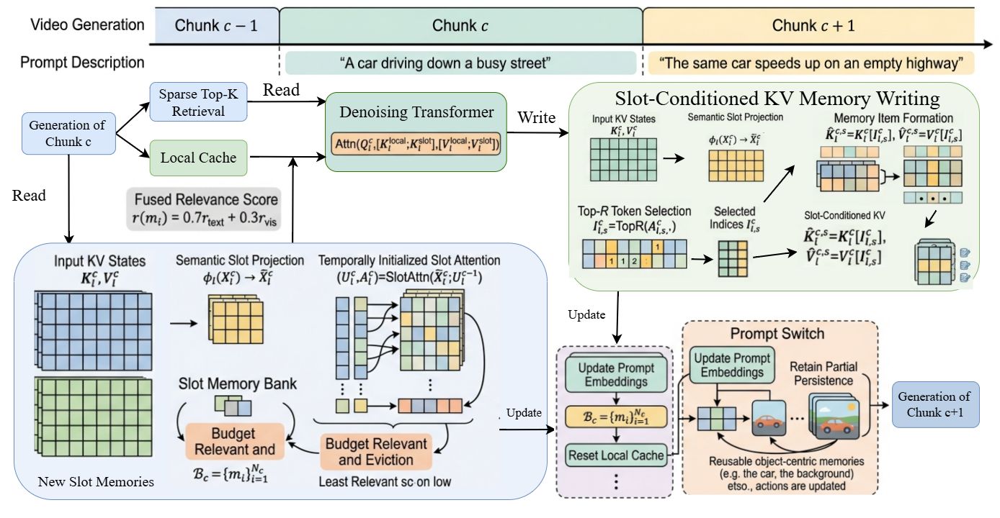

SlotMemory: Object-Centric KV Memory for Streaming Long-Video Generation
Remember objects, not frames.
81.61 60s Quality | 74.29 30s Dynamic Score | 22.8% Dynamic Consistency Gain | 60s Interactive Narratives
Method Overview
SlotMemory formulates streaming long-video generation as a bounded-memory read-write-update loop. For each chunk, the model retrieves semantically relevant slot memories, generates the current chunk, writes new slot-conditioned KV items, and updates the memory bank under a fixed budget.
- Read: retrieve relevant slot memories from the long-term bank.
- Generate: denoise the current chunk with local and retrieved KV context.
- Write: convert current chunk features into slot-conditioned KV memories.
- Update: retain high-value memories and evict obsolete ones under budget.

Enhanced Consistency in Extended Video Generation
Core takeaway: SlotMemory demonstrates pronounced improvements in long-horizon video synthesis (30–60s), where maintaining memory fidelity is critical for preserving entity identity and adhering to prompt instructions. These results highlight the efficacy of object-centric KV memory over conventional temporal-centric approaches.
60-second Interactive Multi-Prompt Evaluation
| Method | Quality | 0-10s CLIP | 10-20s | 20-30s | 30-40s | 40-50s | 50-60s |
|---|---|---|---|---|---|---|---|
| Infinity-RoPE | 79.98 | 23.87 | 22.62 | 22.16 | 21.82 | 22.20 | 22.20 |
| LongLive | 79.09 | 26.49 | 25.60 | 24.89 | 24.48 | 24.81 | 24.54 |
| MemFlow | 78.57 | 26.29 | 24.09 | 23.15 | 23.93 | 23.68 | 23.39 |
| SlotMemory | 81.61 | 26.81 | 26.11 | 25.18 | 25.33 | 24.91 | 25.25 |
30-second Single-Prompt Long Video Evaluation
| Method | Total | Quality | Semantic | Dynamic | Imaging | Temporal Style |
|---|---|---|---|---|---|---|
| Self-Forcing | 82.21 | 83.38 | 77.54 | 51.85 | 68.17 | 23.31 |
| Infinity-RoPE | 83.16 | 84.17 | 79.13 | 57.04 | 67.94 | 23.79 |
| MemFlow | 82.95 | 83.86 | 79.31 | 60.46 | 67.68 | 23.89 |
| LongLive | 82.77 | 83.31 | 80.64 | 40.19 | 68.96 | 23.97 |
| SlotMemory | 84.28 | 85.23 | 80.49 | 74.29 | 72.26 | 24.34 |
SlotMemory leads most long-horizon metrics, with especially large gains in Dynamic and Imaging Quality.
Qualitative Demonstrations
In Ours Only: 2x2 per Group, Group #1 corresponds to the 60-second interactive multi-prompt scenario, while Group #2 corresponds to the 30-second single-prompt evaluation. The second row facilitates direct visual comparison between SlotMemory outputs and baseline methods.
Ours Only: 2x2 per Group
Ours Group #1 (60s)
Ours Group #2 (30s)
Grouped Comparison: 3 Videos per Group
Ours
Baseline A
Baseline B
Comparison Group #1
Ours
Baseline A
Baseline B
Comparison Group #2
Ours
Baseline A
Baseline B
Comparison Group #3
Ours
Baseline A
Baseline B
Comparison Group #4
Citation
@article{dou2026slotmemory,
title={SlotMemory: Object-Centric KV Memory for Streaming Long-Video Generation},
author={Weijia Dou and Hui Li and Jiahao Cui and Lei Zhou and Jingdong Wang and Siyu Zhu},
journal={arXiv preprint},
year={2026},
url={https://tj12323.github.io/SlotMemory/}
}